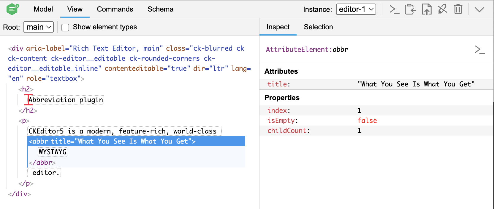
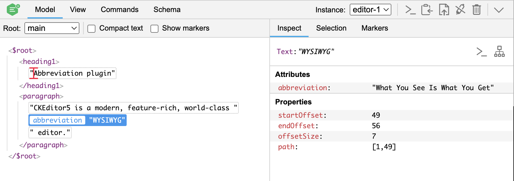
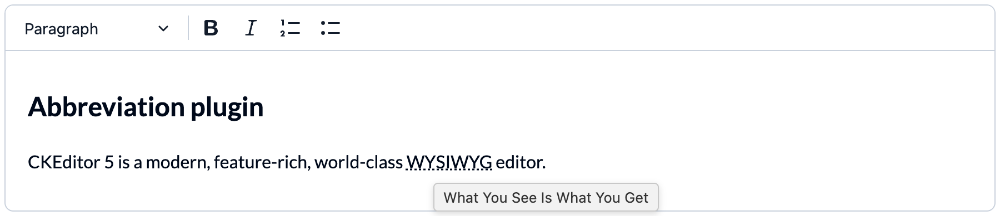

Defining a model and a view
This guide will show you how to create a simple abbreviation plugin for CKEditor 5.
We will create a toolbar button that lets the users insert abbreviations into their document. These abbreviations will use the <abbr> HTML element with a ‘title’ attribute that will show up in a tooltip when the user hovers over the element. You can check the mechanism hovering over the underlined “HTML” text in the previous sentence.
This first part of the tutorial will cover the basics. We will just insert one possible abbreviation: “WYSIWYG.” We will get user input in the next part of this tutorial series.
If you want to see the final product of this tutorial before you plunge in, check out the live demo.
If you want to use this tutorial with CDN, follow the steps in the Adapt this tutorial to CDN section.
The easiest way to get started is to grab the starter project using the commands below.
npx -y degit ckeditor/ckeditor5-tutorials-examples/abbreviation-plugin/starter-files abbreviation-plugin
cd abbreviation-plugin
npm install
npm run devThis will create a new directory called abbreviation-plugin with the necessary files. The npm install command will install all the dependencies, and npm run dev will start the development server.
The editor with some basic plugins is created in the main.js file.
The starter files come with the CKEditor 5 Inspector attached to the editor, so you can debug and observe what is happening in the model and the view layers. It will give you tons of useful information about the state of the editor such as internal data structures, selection, commands, and many more.
Our abbreviation plugin is divided into three components – Abbreviation, AbbreviationUI, and AbbreviationEditing:
Abbreviationwill be the glue that holds the UI and the editing together.AbbreviationUIwill be responsible for the UI – the toolbar button.AbbreviationEditingwill enable the abbreviation attribute in the model and introduce a proper model ←→ view conversion.
We put them in the /abbreviation directory. We will be adding more files there in the next parts of the tutorial. This is our directory structure so far:
├── main.js
├── index.html
├── package.json
├── abbreviation
│ ├── abbreviation.js
│ ├── abbreviationediting.js
│ └── abbreviationui.js
Take a look at the 3 components, which have already been defined and imported into main.js.
AbbreviationUI:
// abbreviation/abbreviationui.js
import { Plugin } from 'ckeditor5';
export default class AbbreviationUI extends Plugin {
init() {
console.log( 'AbbreviationUI#init() got called' );
}
}AbbreviationEditing:
// abbreviation/abbreviationediting.js
import { Plugin } from 'ckeditor5';
export default class AbbreviationEditing extends Plugin {
init() {
console.log( 'AbbreviationEditing#init() got called' );
}
}Abbreviation:
// abbreviation/abbreviation.js
import AbbreviationEditing from './abbreviationediting';
import AbbreviationUI from './abbreviationui';
import { Plugin } from 'ckeditor5';
export default class Abbreviation extends Plugin {
static get requires() {
return [ AbbreviationEditing, AbbreviationUI ];
}
}Now, we need to load the Abbreviation plugin in our main.js file. The editor will load the AbbreviationUI and the AbbreviationEditing components by itself, as they are required by our “glue” plugin.
// main.js
import Abbreviation from './abbreviation/abbreviation'; // ADDED
ClassicEditor
.create( {
attachTo: document.querySelector( '#editor' ),
licenseKey: 'GPL', // Or '<YOUR_LICENSE_KEY>'.
plugins: [
Essentials, Paragraph, Heading, List, Bold, Italic,
Abbreviation // ADDED
],
toolbar: [ 'heading', 'bold', 'italic', 'numberedList', 'bulletedList' ]
} );You should see that the AbbreviationEditing and AbbreviationUI plugins were loaded.
CKEditor 5 implements its own custom data model, which does not map 1:1 to the DOM. The model document is converted into the view, which represents the content that the user is editing.
In the view layer, we will have the <abbr> HTML element, with the title attribute. See what it will look like in the inspector.

In the model, inline elements such as <abbr>, are represented as attributes not as separate elements. In order for our plugin to work, we will need to make sure that we can add abbreviation attribute to the text node.

We can do it by defining the model’s schema. With to a couple lines of code, we will allow all text nodes to receive the model abbreviation attribute.
Schema defines what is allowed in the model in terms of structures, attributes, and other characteristics. This information is then used by the features and the engine to make decisions on how to process the model, so it is crucial that your custom plugin has a well-defined schema. Read more about it in our introduction to the editing engine architecture.
We will simply extend the text node’s schema to accept our abbreviation attribute using the schema.extend() method.
Update the AbbreviationEditing plugin with this definition:
// abbreviation/abbreviationediting.js
import { Plugin } from 'ckeditor5';
export default class AbbreviationEditing extends Plugin {
init() {
this._defineSchema(); // ADDED
}
_defineSchema() { // ADDED
const schema = this.editor.model.schema;
// Extend the text node's schema to accept the abbreviation attribute.
schema.extend( '$text', {
allowAttributes: [ 'abbreviation' ]
} );
}
}Converters tell the editor how to transform the view to the model (for example, when loading the data to the editor or handling pasted content) and how to render the model to the view (for editing purposes or when retrieving the editor data).
Conversion is one of the more complex topics in our editing engine architecture. It is definitely worth reading more about conversion in the editor before we move on.
We will need to convert the model abbreviation attribute into a view element (downcast) and vice versa (upcast). We can achieve this by using our conversion helpers and defining what the model and the view is supposed to look like for both conversions.
Converting the full title of the abbreviation is a little bit tricky, because we need to make sure that its value is synchronized between the model and the view.
In the downcast conversion, we will use one of our conversion helpers – attributeToElement() – to transform the model abbreviation attribute into the view <abbr> element.
We will need to use a callback function to get the title stored as a model attribute value and transform it into the title value of the view element. Here, the second parameter of the view callback is the DowncastConversionApi object. We will use its writer property, which will allow us to manipulate the data during downcast conversion, as it contains an instance of the ViewDowncastWriter.
// abbreviation/abbreviationediting.js
import { Plugin } from 'ckeditor5';
export default class AbbreviationEditing extends Plugin {
init() {
this._defineSchema();
this._defineConverters(); // ADDED
}
_defineSchema() {
// Previously defined schema.
// ...
}
_defineConverters() { // ADDED
const conversion = this.editor.conversion;
// Conversion from a model attribute to a view element.
conversion.for( 'downcast' ).attributeToElement( {
model: 'abbreviation',
// Callback function provides access to the model attribute value
// and the ViewDowncastWriter.
view: ( modelAttributeValue, conversionApi ) => {
const { writer } = conversionApi;
return writer.createAttributeElement( 'abbr', {
title: modelAttributeValue
} );
}
} );
}
}The upcast conversion tells the editor how the view <abbr> element is supposed to look like in the model. We will transform it using another conversion helper – elementToAttribute().
We also need to grab the title value from the content and use it in the model. We can do that thanks to a callback function, which gives us the access to the view element.
// abbreviation/abbreviationediting.js
import { Plugin } from 'ckeditor5';
export default class AbbreviationEditing extends Plugin {
init() {
// Schema and converters initialization.
// ...
}
_defineSchema() {
// Previously defined schema.
// ...
}
_defineConverters() {
const conversion = this.editor.conversion;
conversion.for( 'downcast' ).attributeToElement(
// Code responsible for downcast conversion.
// ...
);
// Conversion from a view element to a model attribute.
conversion.for( 'upcast' ).elementToAttribute( {
view: {
name: 'abbr',
attributes: [ 'title' ]
},
model: {
key: 'abbreviation',
// Callback function provides access to the view element.
value: viewElement => {
const title = viewElement.getAttribute( 'title' );
return title;
}
}
} );
}
}Thanks to the upcast conversion, our abbreviation added in the index.html should work now. The changes should be visible after the development server refresh.

Now we can create our Abbreviation toolbar button using the ButtonView class.
We need to register it in the editor’s UI componentFactory, so it can be displayed in the toolbar.
// abbreviation/abbreviationui.js
import { ButtonView, Plugin } from 'ckeditor5';
export default class AbbreviationUI extends Plugin {
init() {
const editor = this.editor;
editor.ui.componentFactory.add( 'abbreviation', () => {
const button = new ButtonView();
button.label = 'Abbreviation';
button.tooltip = true;
button.withText = true;
return button;
} );
}
}We passed the name of the button in the componentFactory.add, so it is now available to use in the toolbar configuration. We can now simply add it to the toolbar in main.js:
// main.js
import Abbreviation from './abbreviation/abbreviation';
ClassicEditor
.create( {
attachTo: document.querySelector( '#editor' ),
licenseKey: 'GPL', // Or '<YOUR_LICENSE_KEY>'.
plugins: [
Essentials, Paragraph, Heading, List, Bold, Italic, Abbreviation
],
toolbar: [
'heading', 'bold', 'italic', 'numberedList', 'bulletedList',
'|',
'abbreviation' // ADDED
]
} );We have the button, so let’s define what should happen after the user clicks it.
We will use the insertContent() method to insert our abbreviation and its title attribute into the document. Inside, we just need to create a new text node with writer.createText().
// abbreviation/abbreviationui.js
import { ButtonView, Plugin } from 'ckeditor5';
export default class AbbreviationUI extends Plugin {
init() {
const editor = this.editor;
editor.ui.componentFactory.add( 'abbreviation', () => {
// Previously initialized button view.
// ...
this.listenTo( button, 'execute', () => {
const selection = editor.model.document.selection;
const title = 'What You See Is What You Get';
const abbr = 'WYSIWYG';
// Change the model to insert the abbreviation.
editor.model.change( writer => {
editor.model.insertContent(
// Create a text node with the abbreviation attribute.
writer.createText( abbr, { abbreviation: title } )
);
} );
} );
return button;
} );
}
}Here you can see the result in action.
Abbreviation plugin
CKEditor 5 is a modern, feature-rich, world-class WYSIWYG editor.
If you got lost at any point, this is the final implementation of the plugin. You can paste the code from different files into your project, or clone and install the whole thing, and it will run out-of-the-box.
If you want to use the editor from CDN, you can adapt this tutorial by following these steps.
First, clone the repository the same way as before. But do not install the dependencies. Instead, open the index.html file and add the following tags:
<!DOCTYPE html>
<html lang="en">
<head>
<meta charset="UTF-8" />
<meta name="viewport" content="width=device-width, initial-scale=1.0" />
<title>CKEditor 5 Framework – tutorial CDN</title>
<link rel="stylesheet" href="https://cdn.ckeditor.com/ckeditor5/49.1.0/ckeditor5.css" />
</head>
<body>
<div id="editor">
<p>Hello world!</p>
</div>
<script src="https://cdn.ckeditor.com/ckeditor5/49.1.0/ckeditor5.umd.js"></script>
<script type="module" src="/main.js"></script>
</body>
</html>The CSS file contains the editor and content styles. Therefore, you do not need to import styles into your JavaScript file.
// Before:
import 'ckeditor5/ckeditor5.css';
// After:
// No need to import the styles.The script tag loads the editor from the CDN. It exposes the global variable CKEDITOR. You can use it in your project to access the editor class and plugins. That is why you must change the import statements to destructuring in the JavaScript files:
// Before:
import { ClassicEditor, Essentials, Bold, Italic, Paragraph } from 'ckeditor5';
// After:
const { ClassicEditor, Essentials, Bold, Italic, Paragraph } = CKEDITOR;Using the editor from CDN requires a commercial license
The CDN build is not licensed under the GPL. Therefore, you need to use a commercial license key. Otherwise, you will get a license-key-invalid-distribution-channel error.
After following these steps and running the npm run dev command, you should be able to open the editor in the browser.
What’s next
That’s it for the first part of this tutorial! Your plugin should now work (at least in its most basic form). Move on to the second part, where you will create a balloon with a form to get user’s input, replacing our hard-coded “WYSIWYG” abbreviation.